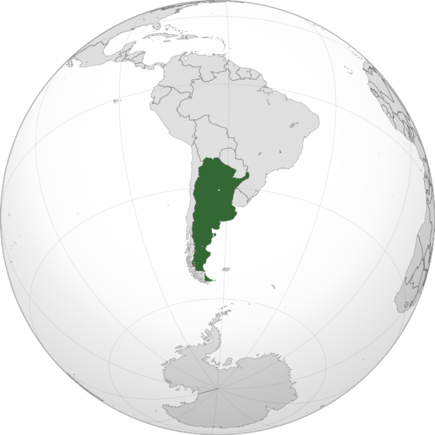

Text bold, Text italic  Argentina El país mas austral del mundo se ubica en el continente americano Bandera Creada en 1816, originalmente no tenía el sol que fue introducido dos años despues Selección de fútbol Pionera del continente en asociarse a la FIFA Anterior Siguiente